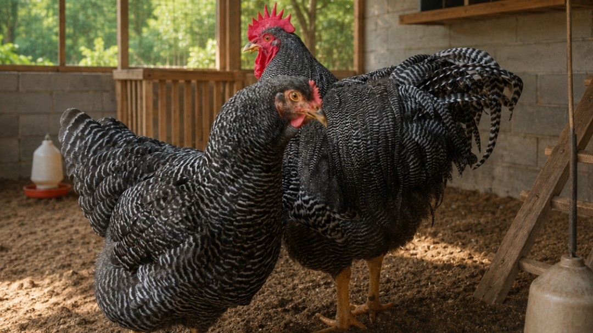
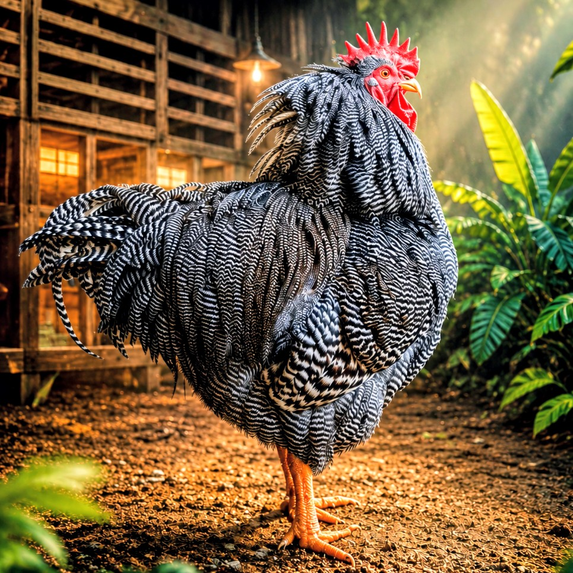
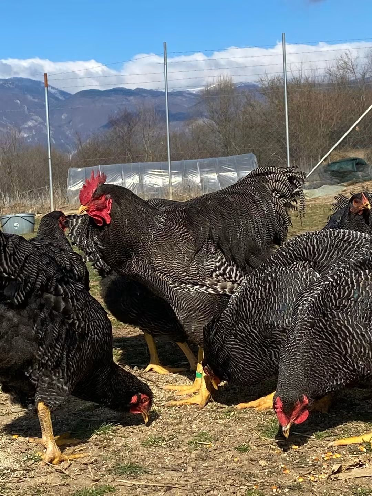
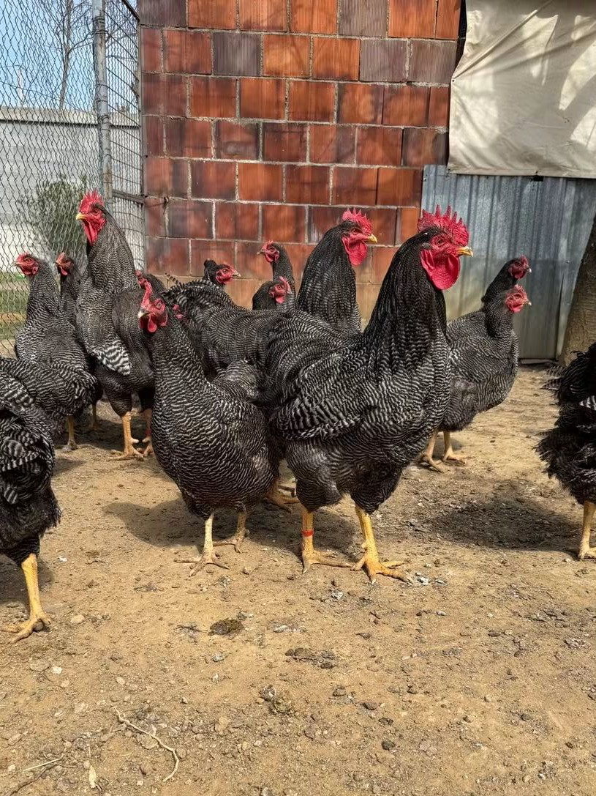
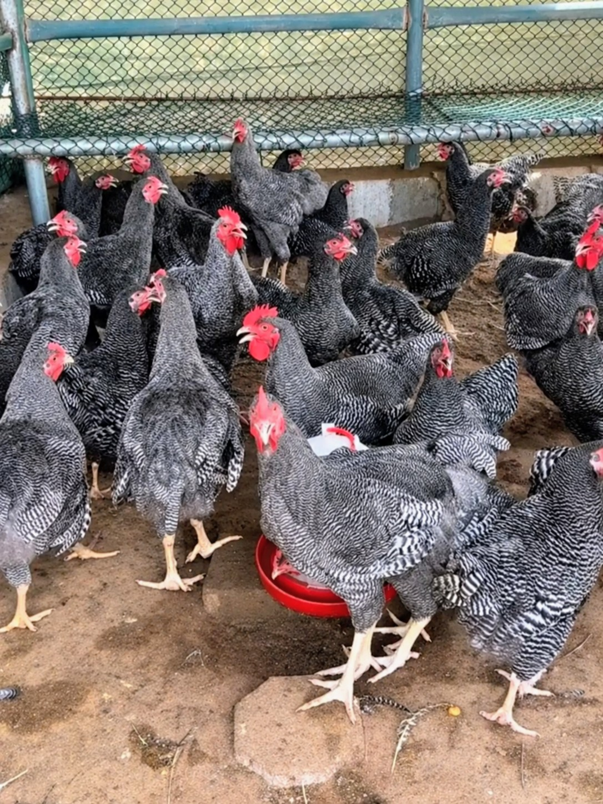
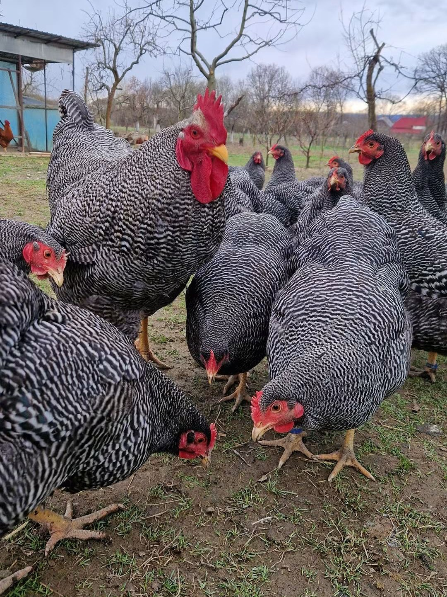
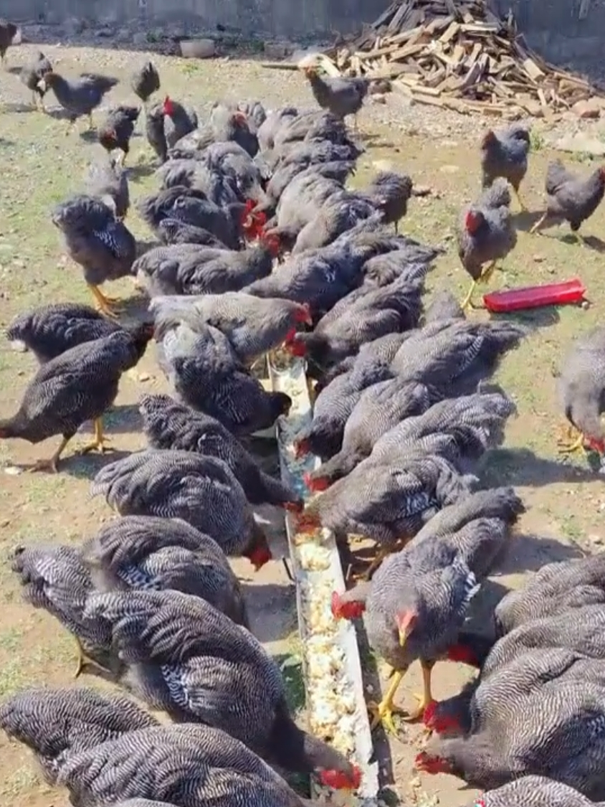
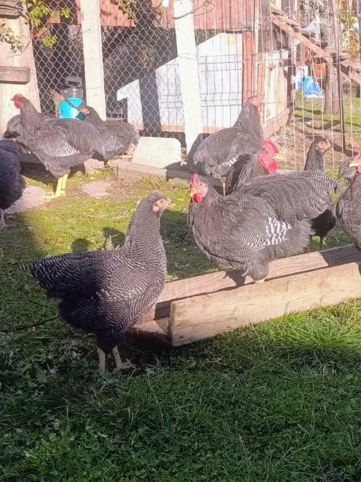

BENTUK TUBUH
Tubuh lebar, panjang, dan kokoh dengan dada penuh serta punggung yang kuat. Postur ini mencerminkan karakter Barred Plymouth Rock sebagai ayam serbaguna untuk telur dan daging.

Pusat informasi peternakan Barred Plymouth Rock yang dirancang modern, rapi, dan mudah dipelajari dari sejarah hingga pembibitan.
Mengenal perjalanan ras Barred Plymouth Rock dari Amerika Serikat.


Dokumentasi American Barred Plymouth Rock Club menjadi bagian penting dari perjalanan sejarah Barred Plymouth Rock di Amerika. Pada masa ini, perhatian terhadap identitas ras, bentuk tubuh, pola barred, serta kualitas breeding semakin berkembang di kalangan peternak dan penghobi unggas.

Seekor Dark Barred Rock Hen yang mendapatkan penghargaan dalam ajang pameran Chicago Coliseum. Dokumentasi ini menggambarkan perhatian besar terhadap kualitas Barred Rock, terutama dalam penampilan, pola bulu, bentuk tubuh, dan karakter ras.

Perkembangan Barred Plymouth Rock tidak terlepas dari peran klub ras dan komunitas peternak. Dokumentasi lama menjadi bagian penting untuk memahami bagaimana karakter Barred Plymouth Rock dipertahankan dan dikembangkan dari generasi ke generasi.

Dokumentasi ini memperlihatkan Barred Rock pada masa ketika kualitas breeding dan kemampuan produksi menjadi perhatian utama. Barred Plymouth Rock dikenal sebagai ayam serbaguna yang menggabungkan kualitas tubuh, produksi telur, dan nilai pameran.

Dokumentasi ayam jantan Barred Plymouth Rock dari ajang Madison Square Garden tahun 1931. Foto bersejarah seperti ini memperlihatkan bagaimana Barred Plymouth Rock telah lama memiliki tempat penting dalam dunia pameran unggas dan menjadi salah satu ras Amerika dengan warisan sejarah yang kuat.
Dari dokumentasi lama hingga perkembangan modern, Barred Plymouth Rock terus membawa warisan yang sama: tipe tubuh yang kuat, pola barred yang khas, karakter serbaguna, serta sejarah panjang sebagai salah satu ras unggas Amerika yang berpengaruh.
Perkembangan dan peternakan dari berbagai tempat.
𝙶𝚊𝚕𝚎𝚛𝚒 & 𝙽𝚊𝚖𝚊 𝙿𝚎𝚝𝚎𝚛𝚗𝚊𝚔𝚊𝚗.






Standar yang baik adalah perpaduan antara penampilan, struktur, kesehatan, dan kualitas genetik.

Tubuh lebar, panjang, dan kokoh dengan dada penuh serta punggung yang kuat. Postur ini mencerminkan karakter Barred Plymouth Rock sebagai ayam serbaguna untuk telur dan daging.

Mata harus tampak penuh, jelas, dan berwarna merah kecokelatan (reddish-bay).

Single Comb, 5 titik Jengger berbentuk tunggal (single comb), tegak, berukuran proporsional, dengan 5 gerigi/titik yang jelas dan teratur. Titik bagian depan dan belakang umumnya sedikit lebih pendek dibandingkan tiga titik tengah. Warna merah cerah.

Paruh berwarna kuning, kokoh, relatif pendek, dan sedikit melengkung. Pada beberapa standar, warna horn dapat terlihat pada bagian tertentu, tetapi warna dasar Barred Rock adalah kuning.

Kuning Shank dan jari berwarna kuning, bersih dari bulu, dengan 4 jari pada setiap kaki. 🟡 Kuning → warna standar yang diharapkan pada Barred Plymouth Rock. ⚪ Putih/pucat → pigmen kuning kurang terlihat, bisa dipengaruhi genetik, umur, atau kondisi pigmentasi. ⚫ Hitam/abu-abu gelap → biasanya ada melanin/pigmen gelap pada kulit kaki. Jadi, tidak semua kaki yang terlihat putih atau hitam otomatis berarti ayam bukan Barred Plymouth Rock. Untuk menilai kemurnian/ketepatan standar, harus dilihat keseluruhan karakter, bukan warna shank saja.

Bar hitam-gelap dan terang yang teratur setiap bulu memiliki garis/bar (barring) gelap dan terang yang sempit, teratur, sejajar, dan tegas sepanjang bulu. Pola harus konsisten dan terlihat sampai bagian bawah bulu.(IDENTITAS UTAMA)

Ekor berukuran sedang, lebar, dan terbuka, menyatu harmonis dengan tubuh. Bulu ekor harus rapi, penuh, dan memiliki pola barring hitam-putih yang teratur. Jantan: sickle feathers (bulu sabit) berkembang baik, melengkung dan tersusun rapi. Betina: ekor lebih pendek dan tidak memiliki bulu sabit panjang seperti jantan. Posisi ekor sedang/proporsional, tidak terlalu tinggi atau terlalu rendah. Pola barring harus tetap terlihat jelas pada bulu ekor.

Barred Plymouth Rock dikenal memiliki temperamen relatif jinak dan tenang, tetapi tetap aktif mencari makan. Ayamnya umumnya tidak terlalu agresif, mudah dipelihara, dan memiliki sifat indukan yang baik pada sebagian individu.
Perawatan dibuat berdasarkan tahap kehidupan dan kebutuhan harian.

Fokus pada suhu, air minum bersih, pakan sesuai umur, alas kering, dan pemantauan kondisi.
Perhatikan pertumbuhan, kepadatan, ventilasi, kebersihan, dan akses pakan serta air.
Pantau perkembangan tubuh, konsumsi pakan, ruang gerak, dan kondisi bulu.
Jaga konsistensi pakan, air, kandang, kebersihan, dan pengamatan perilaku.
Kelola litter, tempat pakan, tempat minum, ventilasi, dan area sekitar kandang.
Catat makan, minum, berat, telur, perilaku, dan perubahan kondisi untuk evaluasi.
Program pakan disusun berdasarkan tahap umur. Foto setiap bagian dapat diganti sendiri.
Pilih pakan starter yang sesuai umur dan sediakan air minum bersih setiap saat.
Fokus pada nutrisi seimbang untuk pertumbuhan awal dan perkembangan kerangka.
Sesuaikan pakan dengan pertumbuhan dan jangan mengabaikan kualitas air serta mineral.
Untuk ayam yang memasuki fase produksi, gunakan ransum yang memang diformulasikan untuk produksi telur.
Perhatikan kondisi tubuh, keseimbangan nutrisi, air minum, dan kualitas reproduksi.
Tempat untuk dokumentasi bahan tambahan yang digunakan di peternakan.
Tempat untuk menjelaskan manajemen air minum dan mineral sesuai kebutuhan.
Tempat memasukkan jadwal pakan versi peternakan sendiri.
Kandang nyaman membantu menjaga kebersihan, sirkulasi udara, dan kemudahan perawatan.
Ruang untuk foto kandang dan penjelasan tata letak.
Ruang untuk menjelaskan aliran udara dan kondisi lingkungan kandang.
Ruang untuk dokumentasi posisi dan pengelolaan peralatan.
Ruang untuk menjelaskan jenis alas, kekeringan, dan pengelolaannya.
Ruang untuk dokumentasi area aktivitas ayam.
Ruang untuk prosedur kebersihan dan pengelolaan kandang.
Fokus pada pencegahan, pengamatan rutin, kebersihan, dan pencatatan.
Amati nafsu makan, minum, aktivitas, kotoran, pernapasan, dan perubahan perilaku.
Batasi risiko masuknya penyakit melalui kebersihan, alat, orang, dan hewan dari luar.
Ruang untuk prosedur pemisahan ayam yang menunjukkan tanda tidak normal.
Catat tanggal, gejala, tindakan, dan perkembangan untuk evaluasi.
Bagian untuk dokumentasi proses dari indukan hingga generasi berikutnya.
Catat identitas, asal, performa, dan tujuan pembiakan.
Ruang untuk dokumentasi pemilihan dan penyimpanan telur tetas.
Ruang untuk catatan suhu, kelembapan, pembalikan, dan perkembangan telur.
Ruang untuk dokumentasi setelah menetas dan pemindahan ke brooder.
Ruang untuk pencatatan perkembangan dan seleksi berdasarkan tujuan breeding.
Ruang untuk membuat silsilah dan riwayat breeding secara teratur.
Koleksi foto milik sendiri: jantan, betina, DOC, telur, kandang, dan aktivitas peternakan.
Tempat untuk memasukkan link komunitas yang nanti diberikan sendiri.
Tambahkan tautan sumber terpercaya agar pembaca dapat melakukan pencarian lebih luas.
Cari informasi lebih luas melalui mesin pencarian terpercaya.